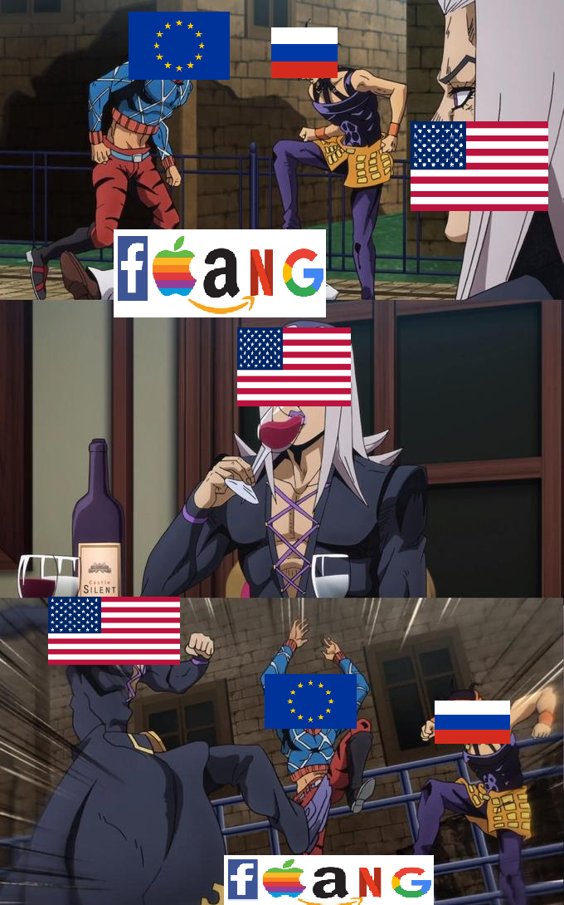

Europe
Time for some (uneducated) politics! I should preface that these are more thoughts than strongly held opinions. Not even fleshed out thoughts, fairly hastily written. I'm also no good at writing and writing is also very easy to misinterpret. This subject is also probably beaten to death by now.
Europe should make a serious plan to develop our own technology, now is the time. There might already be a plan really. As devs, it's partially our responsibility to make sure we and our nations don't get technologically abused.
The problems
Economy
American tech imports are surely hurting the european economy. A lot of american tech imports don't provide much value, they mostly just have monopoly-like positions. The amount of labour that europe gives to america in exchange for this tech "labour" must be awful e.g. manufacturing goods in exchange for google search. When factoring in other imports, the demand for european labour is even lower and so the marginal cost even higher.
Imagine, during the industrial revolution, that all factories in a nation were owned by foreign nationals. What would happen to this nation? Obviously an extreme example, but I think it helps.
Europe is fairly rich in people and poor in resources, giving up on tech, an industry that requires people and little resources, is crazy. Any european budget that stops the importing of tech services will pay dividends through higher tax income and stronger currencies. Product quality will decrease for a short period of time yea, but the marginal reduction in product quality will be worth the savings. Why can we can accept cheaper lower quality products in practically every industry but tech?
Stability
Simulating the future, a system like this seems unstable. So americans enjoy the huge welfare they get draining wealth from europe to the point they become dependent on it. They use their now strong currency to import more goods and buy up wealth around the world. This changes america to become dependent on imports.
Eventually though the welfare, the wealth draining, stops. It can't last forever. Now you have a system that's been built up on certain conditions that no longer hold true, everything has to be undone.
Hyper specialisation
People (economists) might respond that specialisation makes everything more efficient. Let's take a situation where someone orders delivery food for lunch and dinner every day. Is it crazy to think they would be richer if they learnt to cook themselves? Specialisation can maybe make things more efficient.
Specialising also comes with other costs, efficiency isn't the only property of a system. Specialising can hurt resiliency, stability, and sustainability. Not only that, but it can just be straight boring, mix maxing isn't fun.
What are we getting?
Google search
All these search algorithms lack culture. Let me type in a query and get an answer. Where's the journey? Where's the thinking about how to find what you are looking for? Where the uniqueness and character in seeing the same page for every query? Where's the magic in discovering something? What are people even searching for anyway? Surely some indexes on domain names and on-site searching will cover the vast majority of uses at a fraction of the cost.
Youtube/Netflix/...
Transferring bytes between machines. We're importing services to help us transfer bytes between machines. The service provided here is really just the monopoly-like position on the industry.
Android store, Apple store, Steam, and so on
Wow thank you for providing me the ability to buy and download something. It must cost you so much to operate these services. I don't know where your huge profit margins come from, it certainly can't be here. Please, take your 30% cut.
Another example that's practically just transferring bytes between two machines. More monopoly-likes.
Facebook, Twitter, Instagram, Linkedin, Whatsapp
We would hardly even know if social media is having a positive effect on our lives if it were free. Make them ad-driven and we're even less sure. These services are so easily replicated too.
AWS, Azure, GCP
Any european that uses these over open platforms like kubernetes needs to spend some time introspecting. If you're not able to do things without these services, then leave it to the people that can, don't go cheating and race to throw your economy away. Be brave, have some courage, learn the proper solutions. Feels like a wolf domesticating itself, you aren't going to stay a wolf, you'll become a dog.
Visa, Mastercard, (and maybe paypal)
This one doesn't even need an explanation, even the americans are being heavily abused here. Just look at these profit margins for something so easily replaceable.
Apple
A company this closed off and vertically integrated should just be banned in any healthy economy, let alone a foreign company doing it. Any effort to break them up and making them open up their platforms just isn't worth it, just ban them completely.
Windows
Windows doesn't seem that abusive, hard to tell.
American culture
What does giving america all this money even lead too? Americans aren't like the Japanese with their deep understanding of beauty and honour. Okay, yea, they did give us fortnite, but the rest of their media is rubbish. All this free money has perverted them, its hurting them too. A once cultured nation, reduced to this.
Why now
Developer market
It's not like we even need to train labour or redirect it from other useful industries. There is a relative abundance of developers in the market, especially those early on. A lot of employed devs are just twiddling their thumbs or working on useless rubbish anyway. In fact, american tech was practically forced to hire europeans from all the free money we gave them, so we even have the knowledge of how to run some of their products and companies.
Mr Trump
The american tech industry is having a negative effect on parts of america too. The exporting of their tech has led to increased importing of manufactured goods, labour, food etc. Europe not importing American tech should help a lot of these forgotten rural areas, manufacturing bases, low income groups. All areas and groups that are part of the Trump voting base. So by not importing all their tech, you help the current political party.
I think tariffs on european good are planned, whether it happens or not who knows. I do think a lot of americans will benefit from them. It's such an easy win to deal with this by adding tariffs to american tech imports. Oh no america, don't stop importing 1000 peoples labour from us, we'll have to not import 10 peoples labour from you.
Russia
There is still a war happening in europe. I do think the welfare europe gave america played a role in producing this conflict. It is hard to say though.
There is potential to make a deal with russia. Europe not importing american tech, and decoupling in general, is a strong negotiation tool. Add in coupling to russia again e.g. offering to buy russia energy and resources. I would include swapping american and canada in nato for russia and ukraine. In return, russia would leave ukraine and decoupling from iran, china etc. Probably along with domestic policies in place to build relations with europe (especially ukraine) and prevent future conflicts e.g. stronger democracy.
The whole thing is easier said than done of course, maybe extremely naive, but it could benefit europe, ukraine, russia and mr trump voters. It might be the only solution for ukrainian safety long term. Start with europe and russia agreeing they would theoretically be better off as allies and then establish things from there.
Teams
It would help to understand who is with you and who is against you before starting a feud. On one side we might have: European tech companies, europeans who don't export, americans who don't import, and russia. The other side might be: American tech companies, europeans who export, americans who import. Due to current energy prices, I'm not sure that the european exporting situation is looking too good anyway, they would probably benefit from cheaper energy imports that comes with a stronger currency. Americans who import I imagine have a large overlap with democrat voters, don't have to care much about them for 5 years. Who does this leave on the other team: American tech companies and some european exporters?
We're potentially in a position where not many people are willing to back these american tech companies. They have no allies, they've abused americans along with the world. I imagine the situation could look like below.
To maybe make things even better, I think there is one big american tech company europe can work with, microsoft. Or at least work with them to get into a less abusive position. Add in more companies like epic games and it's a party.
Solutions
Goals
- Remove monopoly-lites
- Open up closed platforms (or remove them) e.g. windows, cloud
- Add prices to invisible costs, and then tariff
- Any open source alternatives to low value foreign software should practically be enforced.
- Remove foreign owned server farms
- Improve software repair ability in imports
Strategy
- Digital registry - for ownership of digital media, software etc. This seems like such a high value and low cost thing to do. Digital products would register on a government owned marketplace, consumers can then buy them with no 30% fee. Service providers would allow using your government account to download these digital products, probably at a small cost. This could easily stop abuse from netflix, steam, android store, ios store etc.
- European social apps for things like messaging, voice chat, video calls. Probably already exist so just ban the american ones once the tariffs come. Same with social media. It might benefit to have a specially delegated digital space for "free speech politics", would help get more europeans onboard.
- Removal of digital advertising. Ban/severely reduce it. No one really knows what they are paying for these services. These ad services having a price to their name will allow domestic competitors to severely undercut. Can also fork a browser, remove all ad tracking and mandate it continent wide.
- Open up development closed platforms e.g. windows, cloud
- Straight up ban Apple. They're not going to open up the company. Marginal loss here would have good savings. Wouldn't even notice a difference in 5 years time.
- Develop/fund an android implementation
- Develop/fund a linux implementation (and/or windows if opened)
- Tariff renting foreign owned servers
- Tariff foreign cloud software. This way using an aws service would be double tariffed, once for the server and once for the software. European companies could write the software that runs on the foreign hardware though for just the one tariff. Very quickly can all of this be replaced once these incentives are implemented.
- Ban importing foreign proprietary firmware
LLMs
First lets not be generous and call it ai, it's more like artificial memory than intelligence. While it may be useful in the future and a core component of some systems, the current marginal gain is irrelevant. When you think about the feedback it will have, it could easily be net negative. Stronger foundations need to be laid before ai is developed and used. If LLMs aren't useful, then whatever. If they are useful, then we need to develop our own LLMs. There will just be more problems importing them, ban foreign LLMs now before it's more difficult to do so.
Conclusion
It's time for a european adventure!
Edit
I wrote this before 2025, I'm not sure canada would be happy being removed from nato anymore. Funny world.